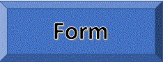
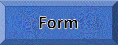

  |
||||
Title: "Fly, Eagles, Fly" The Philadelphia Eagles Fight Song
|
||||
|
Click here for more info which is located on its website (if the link does not work, click on the logo or wordmark to go to its website) Table of Contents Introduction IntroductionThe Philadelphia Eagles are a professional American football franchise based in Philadelphia, Pennsylvania. The Eagles compete in the National Football League (NFL) as a member club of the league's National Football Conference (NFC) East division. They are Super Bowl champions, having won Super Bowl LII, their fourth NFL title, after winning in 1948, 1949, and 1960. The franchise was established in 1933 as a replacement for the bankrupt Frankford Yellow Jackets, when a group led by Bert Bell secured the rights to an NFL franchise in Philadelphia. Bell, Chuck Bednarik, Bob Brown, Brian Dawkins, Reggie White, Steve Van Buren, Tommy McDonald, Greasy Neale, Pete Pihos, Sonny Jurgensen, and Norm Van Brocklin have been inducted to the Pro Football Hall of Fame. The team has an intense rivalry with the New York Giants. This rivalry is the oldest in the NFC East and is among the oldest in the NFL. It was ranked by NFL Network as the number one rivalry of all-time and Sports Illustrated ranks it amongst the Top 10 NFL rivalries of all-time at number four, and according to ESPN, it is one of the fiercest and most well-known rivalries in the American football community. They also have a bitter rivalry with the Dallas Cowboys, which has become more high-profile since the 1960s, as well as a historic rivalry with the Washington Redskins. Their rivalry with the Pittsburgh Steelers is another bitter rivalry, roughly dating back to 1933, that mostly arises from the two teams' statuses as being from opposite ends of the same state. The team consistently ranks in the top three in attendance and has sold out every game since the 1999 season. In a Sports Illustrated poll of 321 NFL players, Eagles fans were selected the most intimidating fans in the NFL. Franchise History1931–1960Midway through the 1931 season, the Frankford Yellow Jackets went bankrupt and ceased operations. After more than a year of searching for a suitable replacement, the NFL granted an expansion franchise to a syndicate headed by Bert Bell and Lud Wray and awarded them the franchise rights of the failed Yellow Jackets organization. The Bell-Wray group had to pay an entry fee of $3,500 (equal to $40,230 today) and assumed a total debt of $11,000 that was owed to three other NFL franchises. Drawing inspiration from the Blue Eagle insignia of the National Recovery Administration—the centerpiece of President Franklin D. Roosevelt's New Deal—Bell and Wray named the new franchise the Philadelphia Eagles. Neither the Eagles nor the NFL officially regard the two franchises as the same, citing the aforementioned period of dormancy. Furthermore, almost no Yellow Jackets players were on the Eagles' first roster. The Eagles, along with the Pittsburgh Steelers and the now-defunct Cincinnati Reds, joined the NFL as expansion teams. In 1937, the Eagles moved to Shibe Park (renamed Connie Mack Stadium in 1954) and played their home games at the stadium through 1957, except for the 1941 season, which was played at Municipal Stadium, where they had played from 1936 to 1939. To accommodate football at Shibe Park during the winter, management set up stands in right field, parallel to 20th Street. Some 20 feet high, these "east stands" had 22 rows of seats. The goalposts stood along the first base line and in left field. The uncovered east stands enlarged capacity of Shibe Park to over 39,000, but the Eagles rarely drew more than 25 to 30,000. The Eagles struggled over the course of their first decade, enduring repeated losing seasons. In December 1940, Pittsburgh Steelers owner Art Rooney sold his franchise to Alexis Thompson for $160,000 and then used half of the proceeds to buy a half interest in the Eagles from Bell, his longtime friend. Soon after, Bell and Rooney traded the Eagles franchise to Thompson and moved it to Pittsburgh (as the "Steelers"), while Thompson moved the Steelers franchise to Philadelphia (as the "Eagles"). In 1943, when manpower shortages stemming from World War II made it impossible to fill the roster, the team merged with the Pittsburgh Steelers forming the "Phil-Pitt Eagles" and were known as the "Steagles." (The merger, never intended as a permanent arrangement, was dissolved at the end of the 1943 season.) By the late 1940s, head coach Earle "Greasy" Neale and running back Steve Van Buren led the team to three consecutive NFL Championship Games, winning two of them in 1948 and 1949. Those two championships mark the Eagles as the only NFL team ever to win back-to-back championships by shutouts, defeating the Chicago Cardinals, 7–0, in 1948—in a blizzard—and the Los Angeles Rams, 14–0, in 1949. After the 1957 season, the Eagles moved from Connie Mack Stadium to Franklin Field at the University of Pennsylvania. Franklin Field would seat over 60,000 for the Eagles, whereas Connie Mack had a capacity of 39,000. The stadium switched from grass to AstroTurf in 1969. It was the first NFL stadium to use artificial turf. In 1960, the Eagles won their third NFL championship, under the leadership of future Pro Football Hall of Famers Norm Van Brocklin and Chuck Bednarik; the head coach was Buck Shaw. The 1960 Eagles, by a score of 17–13, became the only team to defeat Vince Lombardi and his Green Bay Packers in the playoffs. 1961–1975The Eagles had a decent 1961 season and then fell on hard times in 1962. Jerry Wolman, after consulting his longtime friend Brandon Sturrock, bought the franchise in 1963 from the "Happy Hundred", a group of investors who owned the team from 1949–1963, for $5,505,000 (equal to $44,004,098 today). In 1969, Leonard Tose bought the Eagles from Wolman for $16,155,000 (equal to $107,807,505 today), then a record for a professional sports franchise. Tose's first official act was to fire Coach Joe Kuharich after a disappointing 24–41–1 record during his five-year reign. He followed this by naming former Eagles receiving great Pete Retzlaff as General Manager and Jerry Williams as coach. With the merger of the NFL and AFL in 1970, the Eagles were placed in the NFC East Division with their archrivals the New York Giants, the Washington Redskins, and the Dallas Cowboys. Their heated rivalry with the Giants is the oldest of the NFC East rivalries, dating all the way back to 1933 and is often named as one of the best rivalries in the NFL. 1976–1984In 1976, Dick Vermeil was hired from UCLA to coach the Eagles, who had only one winning season from 1962–1975. Starting in 1978, head coach Dick Vermeil and quarterback Ron Jaworski led the team to four consecutive playoff appearances. Vermeil's 1980 team won their first NFC East title. They were matched up against their hated rival the Dallas Cowboys in the NFC Championship game, which they won 20–7. However, the Eagles lost to the Oakland Raiders in Super Bowl XV in 1981. The following year, the Eagles were eliminated in the wildcard round at home against the New York Giants. In the aftermath of the disappointing and strike-shortened season of 1982, head coach Dick Vermeil resigned, claiming that he was "burned out". Vermeil was replaced by defensive coordinator Marion Campbell. In January 1983, Tose announced that his daughter, Susan Fletcher, the Eagles' vice president and legal counsel, would eventually succeed him as primary owner of the Eagles. Then in 1984, rumors were circulating that Leonard Tose was thinking about moving the team to Phoenix, Arizona due to financial reasons. 1985–1993In 1985, Tose was forced to sell the Eagles to Norman Braman and Ed Leibowitz, highly successful automobile dealers from Florida, for a reported $65 million (equal to $147,899,134 today) to pay off his more than $25 million (equal to $56,884,282 today) in gambling debts at Atlantic City casinos. Philadelphia football struggled through the Marion Campbell years of the mid-1980s and was marked by a malaise in fan participation. However, in the 1985 Supplemental draft, the Eagles acquired the rights to Memphis Showboats' elite pass rusher Reggie White. In 1986, the arrival of head coach Buddy Ryan and his fiery attitude rejuvenated team performance and ignited the fan base, but the Eagles failed to win a playoff game during Ryan's tenure. Possibly the worst of these losses was the so-called Fog Bowl in 1988 against the Chicago Bears, which happened to be Ryan's former team that he helped lead to a Super Bowl XX victory as defensive coordinator. Ryan was fired on January 7, 1991, after an upset home playoff loss to the Redskins. Offensive coordinator Rich Kotite was promoted to head coach three days later. After All Pro defensive tackle Jerome Brown was killed in an automobile accident, the team and fanbase became dedicated to "bring it home for Jerome" in the 1992 season. Kotite did lead the Eagles to a playoff victory against the New Orleans Saints during the 1992 season, but they lost all-time sacks leader Reggie White to free agency in the offseason. Kotie's contract was not renewed after a disappointing 1994 season in which the Eagles went 7–9, losing their last seven games after starting the season 7–2. From 1988 to 1996, the Eagles qualified for the playoffs during six out of those nine seasons, but they won the NFC East only once, in 1988. Among the team's offensive stars during that period were quarterback Randall Cunningham, tight end Keith Jackson, and running back Herschel Walker. But the "Gang Green" defense is possibly what defined the team, led by Reggie White, Jerome Brown, Clyde Simmons, Seth Joyner, Wes Hopkins, Mike Golic, Byron Evans, Eric Allen, Andre Waters and Mark McMillian. Lurie Era (1994–Present)Jeffrey Lurie bought the Eagles on May 6, 1994 from then-owner Norman Braman for an estimated $185 million. The club is now estimated to be the 17th most valuable sports team, worth $1.314 billion, as valuated in 2014 by Forbes. In Lurie's first season as owner, the team only had 7 wins, but that was followed by a 10 win season in 1995. Besides the 10 wins and a playoff berth, 1996 was an eventful year. The uniforms changed from the classic shade of Kelly Green to a darker midnight green, quarterback Randall Cunningham left after 11 seasons, and future fan favorite 13-year starter Brian Dawkins was drafted in the 2nd round. After slipping to 6–9–1, and then to 3–13, head coach Ray Rhodes was fired after four seasons. Andy Reid Era (1999–2012)In 1999, the Eagles hired head coach Andy Reid and drafted quarterback Donovan McNabb. From 1999 until 2004, the team continually improved, going from 5–11 in 1999, returning to the playoffs in with an 11–5 record in 2000, surpassing the Buccaneers in the Wild Card round before losing in the divisional. Moreover, the Eagles played in four straight NFC Championship Games between 2001 and 2004. In 2001, the Eagles stayed at 11–5, beating the Buccaneers and Bears to advance to the NFC championship, where they lost to the St. Louis Rams. In 2002, the Eagles drafted running back Brian Westbrook, got the 1st round bye with the 2nd seed in the NFC with a 12–4 record, but the Tampa Bay Buccaneers got their revenge in the Championship and eliminated the Eagles. In 2003, they won the NFC first seed, but Westbrook went down in Week 17, culminating in a loss to the Carolina Panthers in their 3rd straight NFC Championship. 2004 Season and Super Bowl XXXIXIn 2004, the Philadelphia Eagles had their best season since 1960, going 13–1 before resting their starters and losing their next 2, clinching the 1st seed for the second year in a row. McNabb set career highs, completing 64% of his passes for 3,875 yards, though he didn't play all 16 games. McNabb became the first quarterback ever to throw more than 30 touchdowns and fewer than 10 interceptions in a season. His success could be attributed to the fact that he had a reliable receiver, Terrell Owens, who got 1,200 yards and 14 touchdowns in 14 games. After beating the Vikings and Falcons the Eagles advanced to Super Bowl XXXIX, where they dueled the New England Patriots. Although McNabb threw 3 touchdown passes and 357 yards in the game, and the score was tied 14–14 going into the fourth quarter, the Patriots outscored the Eagles and scored ten straight points. McNabb completed a 30-yard touchdown pass, and the Eagles defense held the Patriots to a 3 and out, but a crucial interception with 46 seconds left on the clock secured their fate. 2005-2012The team took a step back in 2005 with a 6–10 record. McNabb had played with a sports hernia and a broken thumb, starting 4–2 but losing three in a row, before McNabb finally succumbs to injury and is out for the rest of the season. For obnoxious behavior and a feud with McNabb, Owens was suspended after 7 games, eventually being cut. In 2006, the team lost McNabb 10 games in and went into turmoil, but Westbrook stepped up, and the Eagles earned their fifth NFC East title under Coach Reid, with a 10–6 record and a win in the wild card round, but they had an 8–8 2007 season. In 2008, the team won their 500th game, and they also drafted DeSean Jackson, a receiving threat when paired with McNabb. On January 11, 2009, the team defeated the defending Super Bowl champion and 1st seed New York Giants 23–11 en route to their 5th NFC Championship Game in 8 years and 5th in the 10 years the Eagles have been coached by Andy Reid. In the 2008 NFC Championship Game, the Eagles made a rally, going from 24–6 at halftime to 25–24 with three minutes left in the 4th, but they lost to the Arizona Cardinals by a score of 32–25 after quarterback Kurt Warner scored a last minute touchdown. As of the conclusion of the 2016 season, during the Lurie era, the Eagles are 1–4 in conference championship games and 0–1 in Super Bowls. On August 13, 2009, the Eagles signed quarterback Michael Vick. On December 6, 2009, Andy Reid became only the 5th coach in NFL history to win 100 or more games with a single team in a single decade. The other four are Tom Landry, Don Shula, Tony Dungy, and Bill Belichick, all Super Bowl winners. McNabb finally had a complete receiving corps, between first round draft pick Jeremy Maclin, DeSean Jackson's 1,000 yard season, and Brent Celek ranking among the top 5 tight ends in the league. Without Brian Dawkins, defensive end Trent Cole stepped up and became the dominant force on defense with 12 sacks, earning him his second trip to the Pro Bowl and All-Pro honors. In 2009, the Eagles started 5–4, but moved up to 11–4, and could clinch the NFC 2nd seed if they won their next game. After a shutout at the hands of the Dallas Cowboys in week 17, the Eagles missed the 1st round bye. but with a record of 11–5, but they were the NFC 6th seed and they narrowly made the playoffs. In the 2009 NFC Wild Card Game, the Eagles played against the Cowboys for the second consecutive week and lost 34–14. Despite many errors from many players, and a great season before the breakdown in Dallas, McNabb took the brunt of the blow and was heavily criticized. Coach Andy Reid said up until April 1, 2010, that McNabb would remain the starter. On March 5, 2010, Brian Westbrook was cut from the Eagles after eight seasons with the team. On April 4, 2010, the team traded long-time starting quarterback Donovan McNabb to the Washington Redskins in exchange for a second round draft pick. Kevin Kolb was immediately named the starter, but after suffering a concussion in week 1 against the Packers, Vick took over as the starter. Vick led the Eagles to its sixth NFC East division title in ten seasons. With a record of 10–6 the Eagles clinched the 3rd seed and had to play a Wild Card Playoff Game. During the 2010 NFC Wild Card Game, the Eagles faced off against the eventual Super Bowl champion Green Bay Packers and lost 21–16. The 2011 season for the Eagles was a major disappointment, as they only managed to finish 8–8 and did not qualify for the playoffs, although they did win the last 4 games of the season. Because of several free agent acquisitions, Vince Young, a back up quarterback, stated that the Eagles were a Dream Team. The Philadelphia fan base and faithful never did concur with the comment as some national outlets may comment. Many Eagles fans believe that Vince Young saying that the Eagles were a 'Dream Team' is the reason that the Eagles had such a horrible season. Eagles fans had high expectations going into the 2012 season. The Eagles started off winning three out of their four first games, but that changed when they lost the next eight games, and were eliminated from the playoff hunt. They only won one out of their last four games. After a loss to the New York Giants on December 30, 2012, longtime head coach Andy Reid was fired after fourteen seasons with the team. Chip Kelly Era (2013–2015)On January 16, 2013, the Eagles brought in University of Oregon head coach Chip Kelly to succeed Reid as head coach after a 4–12 season. The Philadelphia Eagles named Michael Vick starting quarterback going into the 2013 season with much promise running Chip Kelly's fast-paced spread offense. The 2013 season proved to be more successful for the Eagles. A hamstring injury took Michael Vick out after a 1–3 start, but his backup, Nick Foles, led the team to a 10–6 regular season record, and its seventh NFC East title in 13 seasons. Before throwing his first interception in Week 14, Foles threw 19 touchdowns, which was just one shy of the all-time NFL record of consecutive touchdowns without an interception to start a season, set earlier in the season by Peyton Manning. Foles also tied Manning for most touchdown passes in a single-game with seven against the Oakland Raiders which also made him the youngest player in NFL history to throw that many touchdowns in a game. Foles finished the regular season with 27 touchdown passes and only 2 interceptions, giving him the then-best TD-INT ratio in NFL history. (That record was later broken by Tom Brady, in the 2016 season.) He also finished with a 119.0 passer rating, third highest in league history behind only Aaron Rodgers in 2011 and Peyton Manning in 2004. He was also only the second quarterback in NFL history to have a game in which he topped 400 passing yards and a perfect passer rating. LeSean McCoy finished his Pro Bowl season as the league's top rusher with 1,607 rushing yards (also a franchise record) and 2,146 total yards from scrimmage, also best in the NFL. As a whole, the Eagles offense scored 51 touchdowns, most in franchise history passing the previous season high set back in 1948. The Eagles opened the 2014 season winning their first three games and making NFL history as the only team ever to trail by ten or more points in their first three games and come back to win. Nick Foles struggled with turnovers, but ultimately did well and led the Eagles to a 6–2 record, before breaking his collarbone, resulting in his job getting taken over by Mark Sanchez, who outplayed Foles despite facing more playoff teams. The Eagles held the divisional title from week one to week 15 against the Cowboys. After going 9–3 with their crucial win over the Cowboys, the Eagles lost their next 3, and a week after losing the NFC East title, they lost an upset against the 3–11 Redskins and were eliminated from playoff contention with the Cowboys' win over the Colts. Following the 2014 season, Chip Kelly was given total control and made some controversial moves. He traded LeSean McCoy, who had become the team's all-time leading rusher after the 2014 season, for linebacker Kiko Alonso, a player Kelly coached at Oregon who had missed the entire 2014 season. He also cut ten-year veteran and starter, Trent Cole, who was still a consistent threat on defense and was second only to legend Reggie White on the Eagles all-time sack list. He also made a trade where the highly successful Nick Foles was traded for Sam Bradford, who had missed the entire 2014 season with an ACL tear. Kelly tried to re-sign Jeremy Maclin, who had stepped up as the team's leading wide receiver, but he signed with the Kansas City Chiefs instead. However, the Eagles also acquired league leading rusher DeMarco Murray, which not only helped the Eagles, but hurt their rivals, the Dallas Cowboys. They also obtained Super Bowl champion Byron Maxwell, who left the Seattle Seahawks in free agency to sign a six-year, $63 million contract. The first two games of the season were disastrous, as they started 0–2. Bradford had a 2–4 TD-INT ratio, Maxwell was constantly beaten by Falcons receiver Julio Jones, and Murray was held to 11 yards on 21 carries. After Murray was injured, Ryan Mathews rushed for over 100 yards in a Week 3 win against the New York Jets. Kelly made Murray the unquestioned starter and although Murray's play improved over the season, he never regained his dominant form and was held to a career low 3.6 yards per carry average. On December 29, 2015, with one game left in the season, head coach Chip Kelly was released by the Eagles. Offensive Coordinator Pat Shurmur was named Interim Coach for the final game against the rival New York Giants, which Shurmur won 35–30. Former player and current running backs coach Duce Staley was the first coach to be interviewed for the opening head coaching job on January 2, 2016. Doug Pederson Era (2016–Present)The Eagles hired Chiefs offensive coordinator Doug Pederson as their next head coach. The team made the official announcement on January 18, 2016. Eagles owner Jeffrey Lurie said in a statement:"Doug is a strategic thinker, a compelling leader and communicator, and someone who truly knows how to get the best out of his players. All of these factors were what initially attracted us to Doug and we believe that he is the right man to help us achieve our ultimate goal." Pederson had been with the Chiefs for the preceding three years after spending the four seasons previous to those with the Eagles. He served as a quality control assistant for the Eagles in 2009 and 2010 before being promoted to quarterbacks coach for the 2011 and 2012 seasons. He was praised for his work with Chiefs quarterback Alex Smith over the preceding few seasons, particularly 2015, as the Chiefs moved into the top 10 in scoring offense. At the end of the 2015 season, the Eagles had the 13th pick in the 2016 NFL Draft. They traded Byron Maxwell, Kiko Alonso, and their pick to the Miami Dolphins for the #8 pick. Later, they traded the #8 pick, their third-round pick, their fourth-round pick, a 2017 first-round pick, and a 2018 second-round pick to the Cleveland Browns for the #2 pick and a 2017 fourth-round pick. They used the #2 pick to draft North Dakota State quarterback Carson Wentz. On September 3, 2016, the Eagles traded starting quarterback Sam Bradford to the Minnesota Vikings, who had lost Teddy Bridgewater for the season, for a 2017 first-round pick and a 2018 fourth-round pick. Following the trade, the Eagles named Wentz the starting quarterback for Week 1 of the 2016 season. First-time head coach Pederson led the Eagles to a 3–0 start to the season. His rookie quarterback started with 5 touchdowns, no interceptions and over 255 yards per game. The Week 4 bye took a toll on the Eagles, and they lost four out of the next five games, including a loss to every rival team in their division. They also lost right tackle Lane Johnson to a 10-game suspension following the Week 5 loss againist the Lions which damaged Carson Wentz's hot start. In those four games, their average margin of loss was just under 5 points. Pederson and the Eagles won just 3 of their last 7 games. Those included gruesome road losses against the Seattle Seahawks, the Cincinnati Bengals, and the Baltimore Ravens. Although Wentz started off the season well, the 6–5 quarterback finished with a TD–INT ratio of 16:14. The rookie head coach and rookie quarterback tandem led the Eagles to a disappointing year, finishing with a 7–9 record and coming in last in the division. 2018: First Super Bowl ChampionshipDuring the following offseason, the team made several acquisitions on the offensive side of the ball. The Eagles either traded or released notable players from the Chip Kelly era like Ryan Mathews, Matt Tobin, Allen Barbre, Jordan Matthews and Marcus Smith II They signed more notable players to improve its wide receiver corps that have struggled the last two seasons like Alshon Jeffery, and Torrey Smith as well as 2016 Super Bowl champion, Legarrette Blount. They also added veterans on defense such as Patrick Robinson, Chris Long, Corey Graham, Tim Jernigan and Ronald Darby. The team addressed its defense mostly in the draft, using its top three picks on defensive players. The Eagles drafted Derek Barnett with the 14th overall pick. The Eagles had completely revamped their offense and strengthened their defense heading into the 2017 season. They opened the season on the road versus the Washington Redskins and won the game 30–17. The team lost to the Kansas City Chiefs the following week, 27–20, in Pederson's return to face Andy Reid. The Eagles then won six consecutive games, including signature wins at the Carolina Panthers, 28–23, and versus the Washington Redskins, 34–24, in a Monday Night contest. On the morning of October 31, 2017, just before the NFL trade deadline, the Eagles made a blockbuster move sending a fourth-round pick to the Miami Dolphins for star running back Jay Ajayi. The move immediately paid dividends for the Eagles heading into their next game versus the Denver Broncos as Ajayi rushed for 77 yards on just eight attempts including a 46-yard TD near the end of the second quarter. Ajayi and Wentz led the Eagles to a 51–23 rout of the top defense in the NFL. The Eagles headed into their bye week with the best record in the NFL (8–1), and with Wentz leading the NFL MVP discussion with an NFL-leading 23 touchdowns to 5 interceptions. During their bye, the Eagles signed former Giants offensive tackle Will Beatty and former Saints linebacker Dannell Ellerbe to not only add depth but also players with Super Bowl experiences. Coming off of the bye week, the Philadelphia Eagles entered a Sunday night showdown with the defending NFC East champion Dallas Cowboys. The Eagles came out sluggish and trailed 9–7 at the half. The team exploded in the second half though, rattling off 30 unanswered points to soundly defeat their rival by a final score of 37–9. The Eagles were rolling on an nine-game winning streak after a huge blowout win over the Chicago Bears. The Eagles traveled to Seattle in Week 13 in a huge Sunday Night showdown against Russell Wilson and the Seattle Seahawks. The Eagles struggled throughout the whole game, blowing many scoring opportunities and allowing Wilson to throw 3 touchdowns. The Eagles lost 24–10, snapping their win streak. However, the Eagles bounced back in Week 14 win over the Los Angeles Rams in a tough 43–35 win. However, Carson Wentz left the game in the third quarter with a knee injury. It was later found out that Wentz tore his ACL ending his MVP caliber season. Backup Nick Foles would, once again take over as starting quarterback. In Foles's first start against the New York Giants, he would lead them back from a 20-7 deficit and score 4 touchdowns and win the game 34-29. Foles struggled in the last two games of the season against the Oakland Raiders and the Dallas Cowboys, and threw a touchdown and 2 interceptions in that span. Despite this, the Eagles finished 13-3 and secured the top seed in the NFC. The Eagles opened as the underdogs despite being the No. 1 seed in the NFC and this was the first time in history that a No. 1 seed has opened up the postseason as an underdog. Despite this Foles would lead the Eagles past the Atlanta Falcons in the Divisional Round 15-10. In the next game Foles and the Eagles annihilated the Minnesota Vikings 38-7 in the NFC Championship nicknamed the Minneapolis Massacre, mocking the Minneapolis Miracle from their previous playoff victory. Foles had his best game since week 15 and threw for 352 passing yards and 3 touchdowns including an impressive flea flicker touchdown pass. This win marked the franchise's third Super Bowl appearance and a berth in Super Bowl LII for a 2005 rematch against Tom Brady and the New England Patriots. With Foles at the helm the Eagles started off the game strong, leading the Patriots 22-12 at halftime. In the second half the Patriots gained momentum and for the first time took the lead in the 4th quarter 33-32. The Eagles rallied back and scored an 11-yard Touchdown to tight end Zach Ertz. Later the Eagles converted on a 46-yard field goal by Jake Elliott to lead 41-33. On the final play of the game with 9 seconds left, Brady threw a hail-mary pass directed toward tight end Rob Gronkowski which was bobbled by Patrick Robinson before being dropped in the end-zone as time expired securing the win for the Eagles 41-33, ending the 58 year long championship drought. This would be Philadelphia's first Super Bowl win and their fourth league championship (their first championship since 1960). Foles won Super Bowl MVP going 28-43 with 373 passing yards, 3 touchdowns and an interception. Nick Foles became the first backup quarterback to start and win a Super Bowl since his opponent Tom Brady won as backup for Drew Bledsoe in 2001. Season Records
RivalriesNew York GiantsOne of the NFL's oldest, this rivalry began on October 15, 1933 when the Giants defeated the newly founded Eagles 56–0. The Giants lead the all-time series 84–82–2. Three of the best known comebacks against the Giants are labeled as "Miracle In The Meadowlands – Herm Edwards", "Miracle In The Meadowlands II – Brian Westbrook" and "Miracle In The New Meadowlands – DeSean Jackson". Dallas CowboysThe Cowboys have been one of the Eagles' biggest rivals. The Eagles won the first game in this rivalry 27–25 on September 30, 1960. Dallas leads the all-time series 63–51–0. They have been close in recent years, with Dallas winning 12 games from 2006 to the present while the Eagles have also won 12. There is much hostility between the two teams' fan bases, with incidents such as the 1989 Bounty Bowl. Washington RedskinsNot as big as the rivalries between the Giants and Cowboys, that with division rivals Washington Redskins is still fierce. It started in 1934 when the Washington Redskins were first known as the Boston Redskin; the Redskins defeated the Eagles 6–0, and lead the all-time series 85–76–6. The rivalry has been very even since 2010 overall. However, the Eagles swept the Redskins during the 2017 season for the first time since the 2013 season. Pittsburgh SteelersThe Eagles and Pittsburgh Steelers are both located in Pennsylvania and began play in 1933. From that season, through 1966, this was a major rivalry for both teams as both were part of the same division. In 1967, they were placed in separate divisions but remained in the same conference for three years. Finally, in 1970, the Steelers (along with the Cleveland Browns and Baltimore Colts) moved to the American Football Conference while the Eagles stayed with the rest of the old-line NFL teams in the National Football Conference. As a result, the Eagles and Steelers no longer played each other every year. Currently they are scheduled to meet once every four years in the regular season, the most recent meeting being in 2016 at Philadelphia, with the Eagles winning 34-3. The Steelers have lost nine straight games on the road against the Eagles dating back to 1966, which was also the start of the Super Bowl era. The Eagles lead the all-time series 47–28–3. Logo and UniformsFor several decades, the Eagles' colors were kelly green, silver, and white. In 1954, the Eagles, along with the Baltimore Colts, became the second team ever in the NFL to put a logo on their helmets, with silver wings on a kelly green helmet. In 1969, the team wore two helmet versions: Kelly green with white wings in road games, and white with kelly green wings at home. From 1970 to '73, they wore the white helmets with Kelly green wings exclusively before switching back to Kelly green helmets with silver wings. By 1974, Joseph A. Scirrotto Jr. designed the silver wings took on a white outline, and this style on a kelly green helmet became standard for over two decades. From 1948–95, the team logo was an eagle in flight carrying a football in its claws, although from '69–72, the eagle took on a more stylized look. As the design was similar to the Apollo 11 emblem, and its moon-landing craft was dubbed Eagle, players wore the flight's mission patch on their jerseys during 1969. In 1973, the team's name was added below the eagle, which returned to its pre-'69 look. However, both the logo and uniforms were radically altered in 1996. The primary kelly green color was changed to a darker shade, officially described as "midnight green." Silver was practically abandoned, as uniform pants moved to either white or midnight green. The traditional helmet wings were changed to a primarily white color, with silver and black accents. The team's logo combination (the eagle and club name lettering) also changed in 1996, with the eagle itself limited to a white (bald eagle) head, drawn in a less realistic, more cartoon-based style, and the lettering changing from calligraphic to block letters. Since the 1996 alterations, the team has made only minor alterations, mostly relating to jersey/pant combinations worn during specific games. For example, in 1997, against the San Francisco 49ers, the team wore midnight green jerseys and pants for the first of only two occasions in team history. The second occasion was in 2002, during the final regular season game at Veterans Stadium, a win over the division-rival Washington Redskins. A year later, in the first two games of the 2003 season (both home losses to the Tampa Bay Buccaneers and New England Patriots), the Eagles wore white jerseys with white pants. Since 2003, the white jerseys along with white pants have been worn during preseason games. The 2003 season also saw the first (though only subtle) change to the 1996-style uniform. On both white and green jerseys, black shadows and silver trim were added to both the green and white numbering. The stripe on the pants changed from black-green-black to black-silver-green on the white pants, and from a solid black stripe to one stripe of black, another of silver, with one small white stripe in between for the midnight blue pants. The 2003 season also saw the team debut black alternate jerseys, with a green (instead of black) shadow on white numbers, and silver trim. These black jerseys have been worn for two selected home games each season (usually the first home game after bye week and the season finale). In the 2003 and 2004 regular-season home finales, the team wore the green road pants with the black alternate jerseys, but lost each game. Since then, the Eagles have only worn the black jerseys with the white pants. However, due to the special 75th anniversary uniforms serving as the "alternates" for one game in 2007, the Eagles could not wear the alternate black jersey that season per league rules (alternate uniforms are permitted twice per season but only one can be used). The black jerseys with white pants, however, re-appeared for the 2008 Thanksgiving night game against the Arizona Cardinals. The black jerseys were most recently used in a December 21, 2016 game against the New York Giants, in which they won 24-19. From 2006–2013, the Eagles have only worn the alternate black jerseys once a season and for the last November home game, but did not use them in 2007, 2010, and 2011. For the 2007 and 2010 seasons, the Eagles used throwback uniforms in place of the black alternates for their anniversary to commemorate past teams. The team also started wearing black shoes exclusively in 2004. Since 2014, the Eagles have worn the black jersey twice per season. In 2016, they wore the black jersey three times. To celebrate the team's 75th anniversary, the 2007 uniforms featured a 75th-season logo patch on the left shoulder. In addition, the team wore "throwback" jerseys in a 2007 game against the Detroit Lions. The yellow and blue jerseys, the same colors found on Philadelphia's city flag, are based on those worn by the Philadelphia Eagles in the team's inaugural season, and were the same colors used by the former Frankford Yellow Jackets franchise prior to their suspension of operations in 1931. The Eagles beat Detroit, 56–21. The Philadelphia Eagles wear their white jerseys at home for preseason games and daytime games in the first half of the regular season from September to mid-October when the temperature is warmer. In night contests in the first half of the regular season, the Eagles do not need to wear white at home since the temperature is cooler. However, there have been exceptions, such as the home opener against the Tampa Bay Buccaneers in 2003 and the Washington Redskins in 2007 that were played at night. In late October or beginning in November, the Eagles start to wear their colors at home (although they have done it earlier before), be it the midnight green jerseys or a third jersey. On one occasion the Eagles wore white at home after October in a meeting against the Dallas Cowboys on November 4, 2007 to make the Cowboys wear their road blue jerseys. Since moving to Lincoln Financial Field in 2003, the Eagles have worn white at home for at least their home opener, with the exceptions for the 2010 home opener (see next paragraph), the 2011 home opener against the New York Giants, the 2016 home opener against the Cleveland Browns, and the 2017 home opener against the Giants. In the 2010 season against the Green Bay Packers, on September 12, 2010, the Eagles wore uniforms similar to the ones that were worn by the 1960 championship team in honor the 50th anniversary of that team. In weeks 4 and 6 of the 2010 season, the Eagles wore their white jerseys in a match-up against the Washington Redskins and Atlanta Falcons respectively before reverting to their midnight green jerseys for the rest of their home games. For the 2011 season, the Eagles did not wear white for any of their home games. For the 2012 season Nike took over from Reebok as the NFL's official apparel licensee but the Eagles decided that they would not be adopting Nike's "Elite 51" uniform technology. Aside from the Nike logo replacing the Reebok logo, the only other change is the league-wide revision of the NFL shield on the uniform (replacing the NFL Equipment logo), other than that the uniforms essentially remain unchanged. The Eagles also revived their black alternate jersey. For the 2013 season, the Eagles started to wear white pants, as an alternate to their green pants, with their white jerseys, in the regular season. For the 2014 season the Eagles have officially adopted the "Elite 51″ style uniform from Nike. Recently the team has discussed bringing back the "Kelly Green" uniforms similar to the uniforms worn in the 1960 NFL Championship season and which were last worn in the 2010 season opener vs. Green Bay. Traditionally kelly green, silver and white had been the official team color until 1996 season when it switched to the current "Midnight Green" uniforms. But due to the NFL rules and restrictions having a team go through a waiting period before any major uniform changes and alterations can be made, it would most likely be quite some time before any uniform changes are officially made. In Week 6 of 2014 against the New York Giants, the team introduced black pants to complement their black jerseys, giving them a blackout uniform set, the Eagles won the game 27–0. The victory was their first shutout in 18 years. The blackout uniform was most recently worn in a Week 16 victory, 19-10, against the Raiders in 2017. The Eagles are 6–3 in their blackout uniforms: winning three times against the Giants and once against each of the Minnesota Vikings, Denver Broncos, and Oakland Raiders, and losing against the Seattle Seahawks, Arizona Cardinals, and Green Bay Packers. Training CampThe Eagles previously held their preseason training camp from the end of July through mid-August each year at Lehigh University in Bethlehem, Pennsylvania in the Lehigh Valley. With the addition of new head coach Chip Kelly, the Eagles recently moved their training camp to the NovaCare Complex in Philadelphia. Training camps were previously held at Chestnut Hill Academy in 1935, Saint Joseph's University in 1939 and 1943, Saranac Lake from 1946–1948, Hershey from 1951–1967, Albright College from 1968–1972, Widener University from 1973–1979, and West Chester University from 1980–1995. Fight Song ("Fly, Eagles Fly")This fight song is heard during Eagles' home games after touchdowns and before the team is introduced prior to kickoff. FansDevotionAlthough the method may vary, studies that attempt to rank the 32 fan bases in the NFL consistently place Eagles fans among the best in the league, noting their "unmatched fervor." Eagles fans have numerous dedicated web communities, ranking the Eagles just behind the Phillies as the dominant Philadelphia sports presence on the web. The American City Business Journals, which conducts a regular study to determine the most loyal fans in the NFL, evaluates fans based primarily on attendance-related factors, and ranked Eagles fans third in both 1999 and 2006. The 2006 study called the fans "incredibly loyal", noting that they filled 99.8% of the seats in the stadium over the previous decade. Forbes placed the Eagles fans first in its 2008 survey, which was based on the correlation between team performance and fan attendance. ESPN.com placed Eagles fans fourth in the league in its 2008 survey, citing the connection between the team's performance and the mood of the city. The last home game which was blacked out on television in the Philadelphia market as a result of not being sold out was against the Arizona Cardinals on Sunday, September 12, 1999, which was Andy Reid's first home game as new head coach of the Eagles. The studies note that—win or lose—Eagles fans can be counted on to pack their stadium. As of August 2008, the team had sold out 71 consecutive games, and 70,000 were on the team's waiting list for season tickets. Despite finishing with a 6–10 record in the 2005 season, the Eagles ranked second in the NFL in merchandise sales, and single-game tickets for the next season were sold out minutes after phone and Internet lines opened. Eagles fans have also been known to chant the famous, "E-A-G-L-E-S – Eagles!!" at Flyers, Phillies, and 76ers games when the team is getting blown out late in a game and a loss is inevitable, signifying their displeasure with the given team's performance, and that they are instead putting their hope into the Eagles. Bad BehaviorAlong with their fierce devotion, Eagles fans have a reputation for bad behavior and sports-related violence, especially when the team plays its rivals. In If Football's a Religion, Why Don't We Have a Prayer?, Jereé Longman described the fans of the 700 Level of Veterans Stadium as having a reputation for "hostile taunting, fighting, public urination and general strangeness." So many incidents occurred at a 1997 game against the 49ers that at the following home game, Judge Seamus McCaffery began presiding over a temporary courtroom at the stadium; 20 suspects came before him that day. Fan behavior improved after the team's move to Lincoln Financial Field, and "Eagles Court" ended in December 2003. Eagles CheerleadersThe team also has its own cheerleading squad, which performs a variety of dance moves for the fans and the Eagles on the sideline. The squad also releases a swimsuit calendar each year, and is the first squad in the league to release the calendar on the Android and iOS mobile systems. Radio and TelevisionFrom 2008 through 2010, Eagles games were broadcast on both rock-formatted WYSP and sports-talk Sports Radio 610 WIP, as both stations are owned and operated by CBS Radio. In 2011, CBS dropped the music on WYSP, renaming it WIP-FM and making it a full simulcast of WIP. Later, 610 AM became a CBS Sports Radio national broadcast, and 94 WIP was broadcast on WIP FM. The Eagles extended their broadcasting contract with WIP-FM through 2024. Merrill Reese, who joined the Eagles in 1976, is the play-by-play announcer, and former Eagles wide receiver Mike Quick, who replaced the offense lineman Stan Walters beginning in 1998, is the color analyst. The post game show, which has consisted of many Philadelphia sports personalities, as of the 2014 season is hosted by Kevin Riley, a former Eagles linebacker and special-teamer, and Rob Ellis. Riley was the former post-game host for the show on 94 WYSP before the WIP change over; Rob Ellis hosts a weekly show nightly from 6–10 on 94.1 WIP-FM. No announcement was made prior to the start of preseason regarding who would be the host(s) for 2015. In 2015, the preseason games are being televised on WCAU, the local NBC owned and operated station. Television announcers for these preseason games were not announced prior to the start of preseason. During the regular season, games are governed by the NFL's master broadcasting contract with FOX, CBS, NBC, and ESPN. Most games can be seen on FOX-owned WTXF-TV. When hosting an AFC team, those games can be seen on CBS-owned KYW-TV. |
||||
| About Me | Logos | US States | Games | Bikes | Body Systems | US Airlines | Animals | City of Philadelphia | Philadelphia Eagles | Image Map | Form | ||||
| Contact the web host |